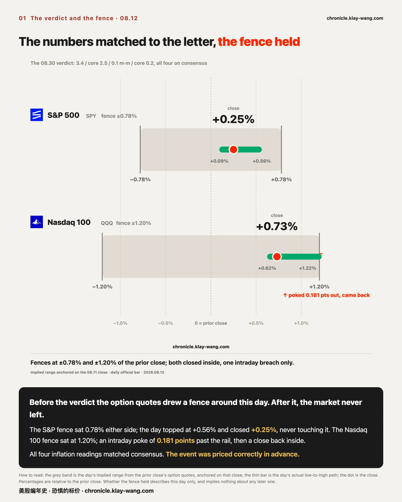
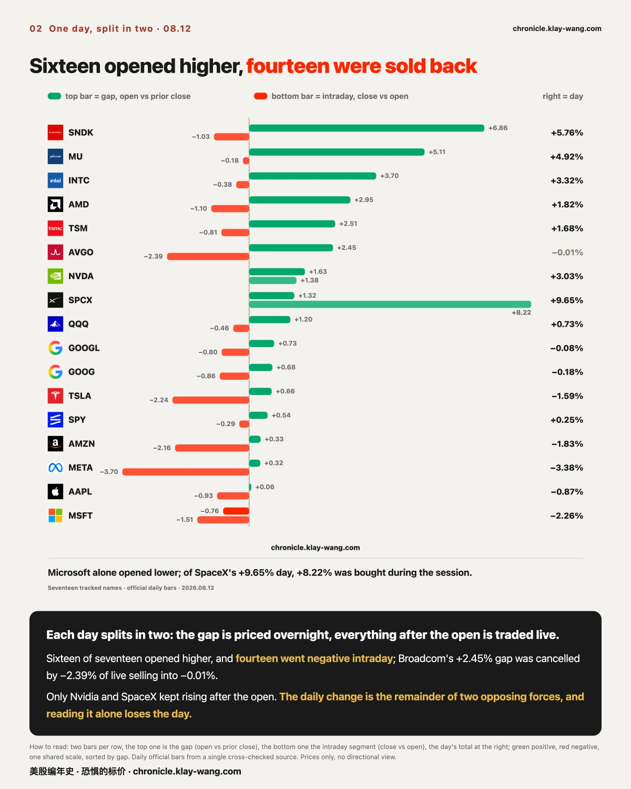
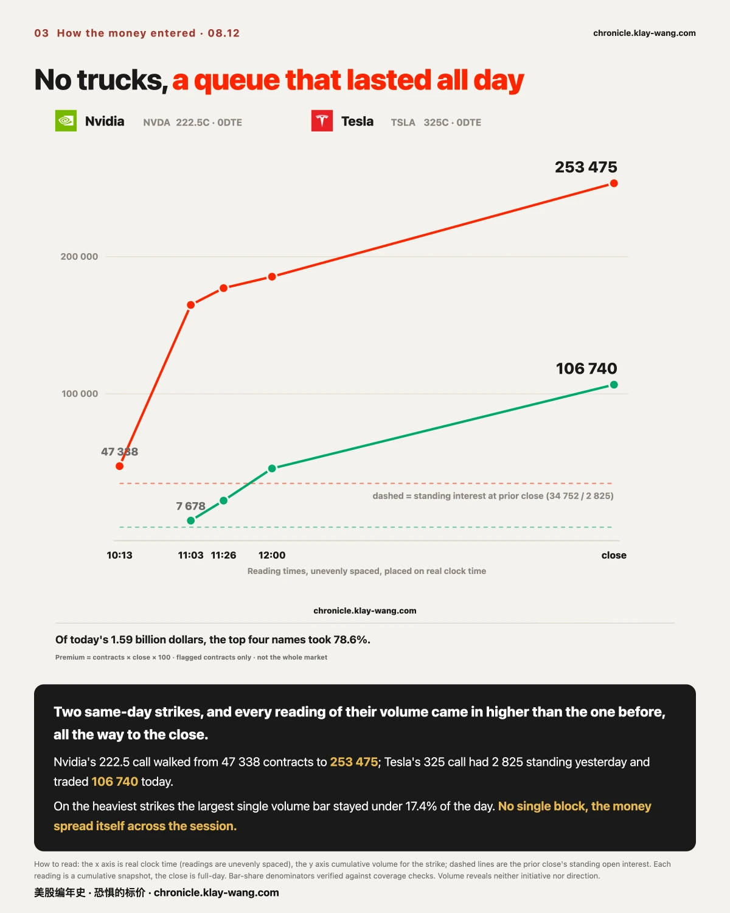
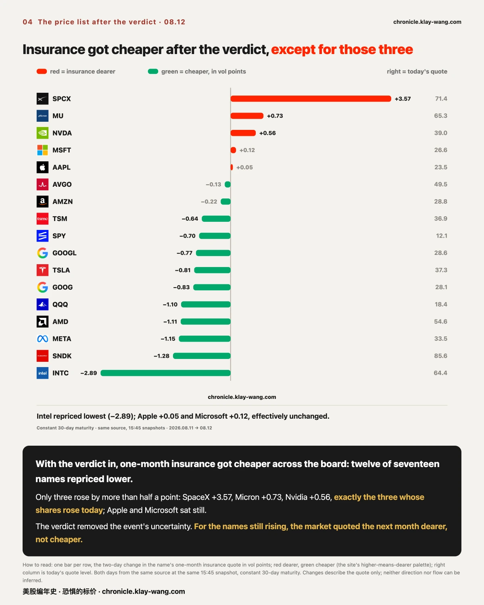
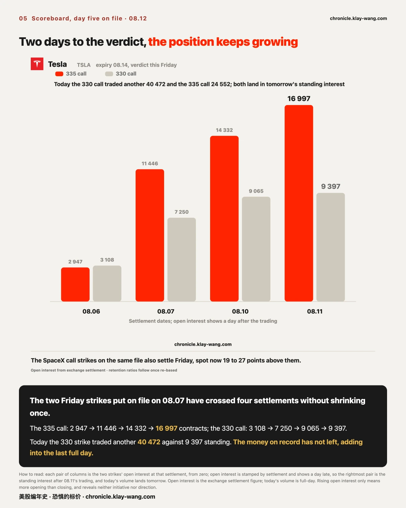
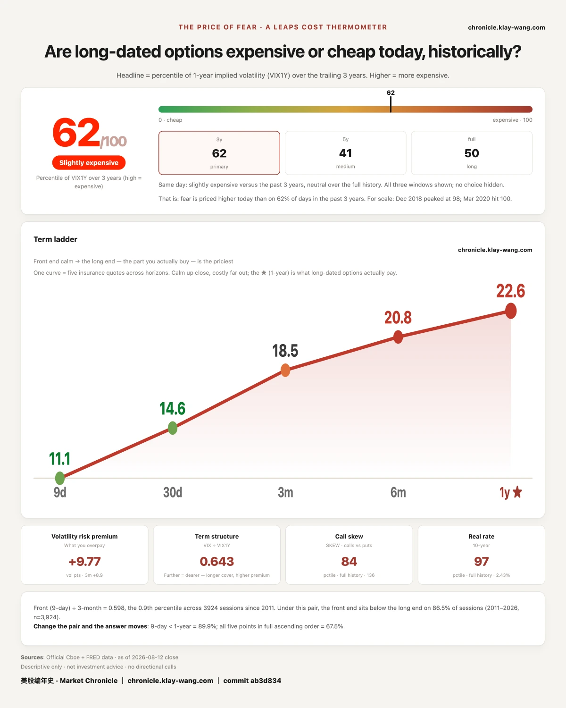

Section 1: the verdict itself, the fence drawn beforehand and the path actually walked. Section 2: seventeen
names, each day split into two halves, and a shape the daily change erases. Section 3: how today's money
entered. Section 4: how the insurance price list was rewritten after the verdict. Section 5: the scoreboard
on yesterday's public record, including the part we got wrong ourselves. Section 6: the daily gauge.
If you are short on time, section 1 and the last section together will tell you what kind of day this was.

This section covers one thing: how much turbulence the market priced for this day in advance, and how much actually arrived. No view on whether the data was good, and nothing about what to do.
At 08.30 the July inflation data landed: 3.4% year on year, core 2.5%, 0.1% on the month, core 0.2%.
All four matched the consensus line by line, and the headline rate was the smallest increase since March.
Before the verdict, the options market had drawn a fence around today's S&P 500: 0.78% either side.
That fence is not anyone's opinion. It is assembled from paid quotes, people buying insurance and people
selling it, and wherever the price settles, that is where the fence stands.
The result: the S&P's day ran from +0.09% at the low to +0.56% at the high and closed +0.25%,
never touching the fence. The Nasdaq 100 was the better story: a fence of 1.20% either side, an intraday
high of +1.22% that poked 0.181 points beyond the rail, and a close back inside at +0.73%.
An analogy. The moving company tells you in advance the road will jolt you by 0.78% at most.
The trip ends with a jolt of 0.25%. You do not need to know the road to read the result:
the people who priced the trip beforehand were not surprised by it.
On measurement: the fence is the implied range from the previous close's option quotes, anchored on the
previous close; the day's path uses the official daily bar.
The three parts: the evidence is the prior implied range against the day's high, low and close; the reasoning
is that the realized path landing inside the prior price means the event was priced correctly in advance;
what would overturn it is tomorrow's producer price release breaking the same fence, which would make
today a lucky quote rather than a correct one.

This section says nothing about which company is better. It covers one shape: the opening jump and everything after it are two different ledgers.
A day's change is two segments stitched together. The opening gap is a price set overnight and premarket;
everything after the open is a price made trade by trade, with real money, during the day. Split them
apart and today was far rougher than the surface shows.
Of the seventeen names tracked, sixteen opened higher; the only one to open lower was Microsoft.
And of those sixteen, fourteen were sold from the open to the close.
Broadcom is the cleanest example: down 0.01% on the day, the quietest name on the board at first glance.
Split it open and it is nothing of the kind: lifted 2.45% overnight, sold 2.39% during the day,
two forces in opposite directions cancelling to a printed zero. Calling it flat loses the whole day.
Sandisk looks the same: +5.76% on the day, of which +6.86% was granted before the open, and the open-to-close
segment was negative.
Two names ran the other way. Nvidia rose in both segments. SpaceX did it decisively: of +9.65% on the day,
the gap contributed 1.32%, and the body of the move, +8.22%, was bought during the session,
with a true high-to-low range of 11.70%.
Why does this shape keep recurring? Three mechanisms, usually working together. First, different people
set the two prices: the gap is set overnight and premarket, in a thin session with few participants,
so it is closer to a statement than a trade; only after the bell does the whole market's money vote.
Second, a higher open is an exit: whoever holds size and wants less of it lacks liquidity above all,
and a gap up is the lift arriving at a higher floor, so that is where they step off. Third, a set of
participants with no opinion are also selling: market makers hedging their option inventory mechanically
sell strength and buy weakness, most tracked names sat in the zone where that behaviour operates today,
and that force reads no news, it only presses price toward the middle. All three roads end at one line:
a price set overnight only counts once the day's real money honours it.
The three parts: the evidence is each name's previous close, open and close; the reasoning is that sixteen
gaps in the same direction describe the overnight pricing, fourteen intraday declines describe the live
trading, and the daily change nets the two against each other; what would overturn it is tomorrow's
split showing the intraday segment broadly positive, which would make today's selling an event day shape
rather than a continuing one.

This section covers how today's flagged option money entered. Not direction; direction is not observable.
The option money flagged today totals 1.59 billion dollars, about a quarter more than yesterday.
The top four names, Nvidia at 363 million, SpaceX at 338 million, Micron at 288 million and Tesla at
262 million, took 78.6% between them. Yesterday nine tenths of the money crowded into the two nearest
days; today the heaviest single day moved out to Friday, at 54.8%.
How the money entered matters more than the total. Nvidia's same day 222.5 call traded 47 338 contracts
by a quarter past ten, 164 thousand by late morning, 185 thousand after noon and 253 475 by the close,
larger at every reading. Tesla's 325 call likewise: 2 825 contracts stood there at yesterday's close,
and today's volume walked from 7 678 to 106 740.
And none of it arrived as one block. On the heaviest strikes, the largest single volume bar of the day
never exceeded 17.4% of the day's total (denominators verified against coverage checks).
An analogy: the warehouse took in a convoy's worth of goods today, and the gate camera never once shows
a truck. Only handcarts, queueing all day.
To be clear: volume only means hands changed. Buyer and seller trade together, so neither initiative nor
direction is observable. Both strikes expired today; at the close one sat 1.59 above its line and the
other 2.51 above, and settlement takes those positions as they are.

This section returns to the seventeen-name cross section: how the quote for one month of insurance was rewritten once the verdict landed.
After a verdict everyone was waiting for, cheaper insurance is the normal outcome: the overhanging event is
resolved, so covering the next month should cost less. And so it went: twelve of seventeen names repriced
lower, Intel the most.
The other side is the interesting one. Only three rose by more than half a point: SpaceX, Micron and
Nvidia, exactly the three names whose shares rose in section 2. Apple and Microsoft sat still.
An analogy. The day after the typhoon passes, insurance gets cheaper across the whole city,
except on the three streets where the water is still rising. Their premiums went up.
On measurement: both days use the same source at the same 15:45 snapshot, a constant thirty-day maturity
quote. Changes describe the quote only; neither direction nor flow can be inferred.
The three parts: the evidence is seventeen names' one-month quotes on two days from one source; the
reasoning is that post-event repricing lower is the norm, so the three that repriced higher, coinciding
exactly with the three that rose, are the day's shape; what would overturn it is those three quotes
falling back with the rest tomorrow, which would make today's rise a crowding artifact rather than a repricing.

This section is the scoreboard. Yesterday's issue put three things on public record: six strikes that grew out of nothing, the single heaviest bet, and two strikes on file for Friday. Each gets checked today, and one failure of our own goes on the record too.
First. The six strikes that grew from almost nothing yesterday, 598 contracts standing the day before
against 84 325 traded, saw five of their number expire today. The verdict: all five finished on the side
where they settle for value. Meta's two strikes closed 28.65 and 31.15 below their lines; Tesla's two,
9.99 and 7.49; AMD's call strike closed 15.43 above its line. The sixth, Broadcom's, runs to August 24
and has not settled.
The caveat comes first: worth something is not the same as profitable. What they settled for has to be
compared with what was paid, entry prices differ, and we do not measure that. It answers only the question
left open yesterday: the goods wheeled onto the empty stall did not turn out to be waste paper.
Second. The heaviest single bet in the same pile, Tesla's 335 call, 134 thousand contracts traded yesterday.
Today it printed a high of 335.27, poked its head past the 335 line once, and closed at 327.51. It expired
at zero. Bets placed on the same day, some settled for value, one missed by 7.49 and became nothing.
Both lines belong in the record, and we do not keep only the flattering one.
Third. The two strikes on file for Friday, Tesla's 330 and 335 calls, have now crossed a fourth settlement:
the 335 call at 2 947 → 11 446 → 14 332 → 16 997 contracts; the 330 call at 3 108 → 7 250 → 9 065 → 9 397.
Today the 330 strike traded another 40 472 contracts. The position kept growing into the last full day.
Friday's close is the verdict.
Three short entries alongside:
Last item: our own account. Both files carried a question still to be verified: were those positions newly
opened, or old ones changing hands. Today that verification is formally recorded as "undecidable", for
different reasons. On the Tesla strikes, the measured values landed in a range our own rule never covered
(the rule defined pass above one line and fail below another, and never wrote the middle). The rule was
our own bad drafting. On the SpaceX strikes, the four baseline numbers the check needed were never filed,
and are now permanently unrecoverable. A gap in the rule is a gap; an unfiled baseline is unfiled. Both go
on the public ledger, and the next case starts with a complete rule and a filed baseline.
Rising open interest only means more opening than closing. Buyer and seller open together;
neither initiative nor direction is observable.

This section covers no individual name. It is what the whole market pays for one year of uncertainty.
What the number is. There is a group of people who must quote a price every day on whether the next year
will be violent, and who lose their own money when the quote is wrong. This index measures where that
quote sits against the past three years.
The 2026.08.12 reading is 62 out of 100.
Yesterday we wrote that after two rising sessions the number had stopped, moving 0.4, and asked whether it
would resume falling or turn back up. The answer came today: it kept falling, a full 3.6 points in one
session, from 65.5 to 61.9, more than the previous two days combined. With the verdict in, the one year
quote eased from 22.75 to 22.62.
At the same moment the maturities still form an upward slope: 11.09 at nine days, 18.53 at three months,
20.82 at six months, 22.62 at one year. Further out, higher, the normal shape. The steepest drop came
at the nine day point, from 12.52 to 11.09: the exam nearest at hand is over, and the nearest insurance
was repriced first.
Why it matters to you: this number is not written for the people buying protection. It is the price
quoted by the people selling it. It does not tell you whether tomorrow rises or falls. It tells you
what the people who must quote a year ahead, and who pay for being wrong, quoted today.
Fear-Price Index · 2026-08-12 · reading 62/100: one year volatility VIX1Y at 22.62, the 62nd percentile of the past three years, higher means dearer. Daily ledger and methodology → chronicle.klay-wang.com · Attribution: Fear-Price Index · Market Chronicle
One preview from after the close. On two autumn expiries, a batch of put contracts appeared in
unusually tidy formation: three strikes, sized one to two to one, roughly 600 thousand contracts across
the two dates, where the standing interest the day before totalled under 3 000. Tonight this is a
single-sided reading; tomorrow's settlement will test whether it stays. If the numbers hold, the next
issue lays it out in full.
Beyond that, the next issue returns to four things: Friday's close settles the Tesla 330/335 file and the
SpaceX file, and both cases go to the record; whether the 54.8% of money staked on Friday repeats today's
shape or inverts it; whether the same fence holds when producer prices land tomorrow; and whether the
long end keeps falling after this 3.6 point step, or stops.